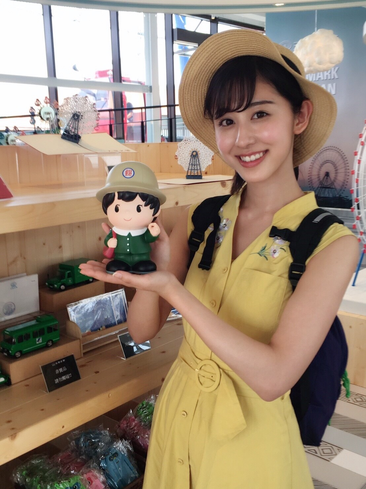
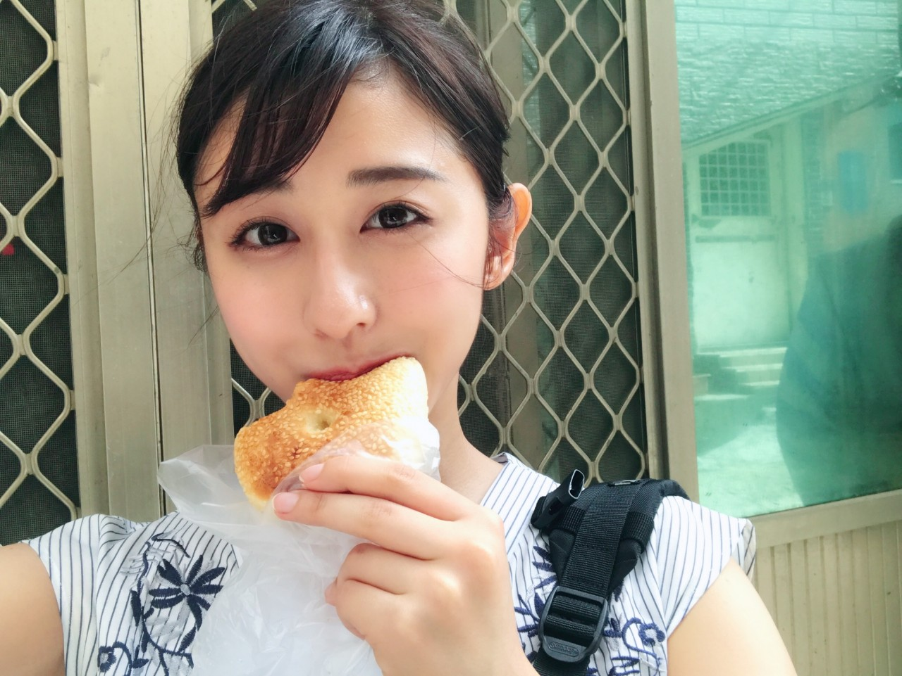
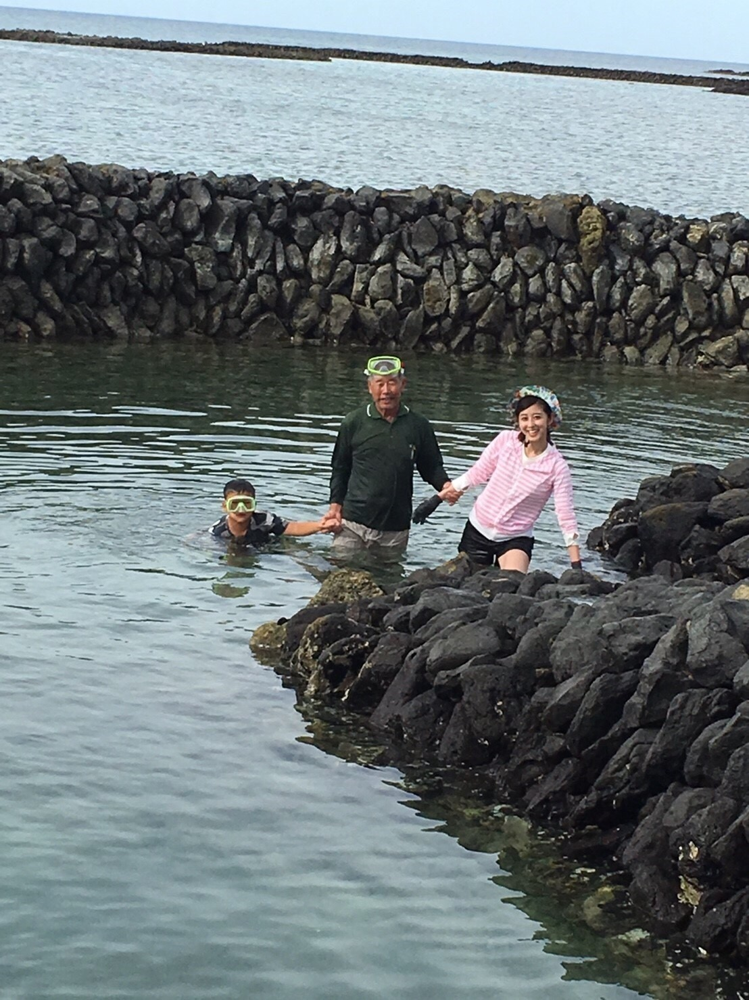
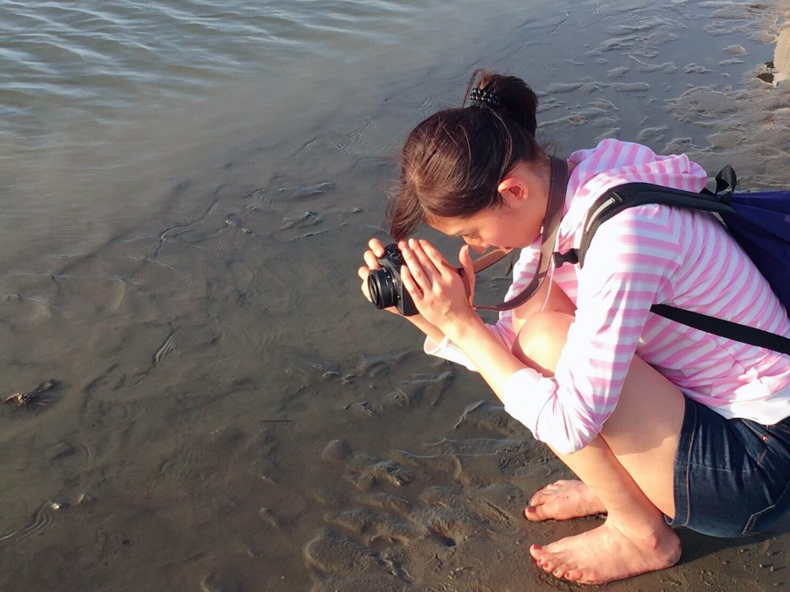
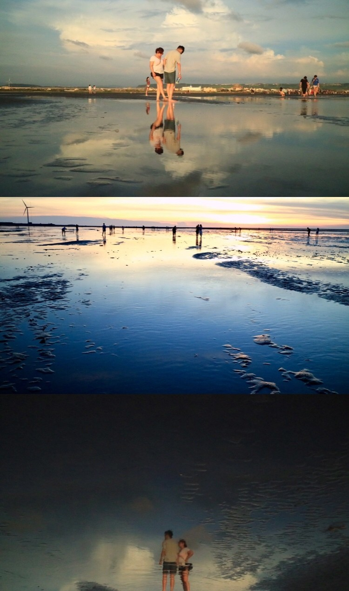

| 2017/07 30 Sun | 斎藤ちはる ミステリーハンターを振り返って |
昨日の「世界ふしぎ発見」を
見てくださった皆さん、
ありがとうございました！！
この度初めてのミステリーハンターを
務めさせていただきました、
斎藤ちはるです。

ヒトシ君人形に似ている(!?)と私の中で話題になった、
クエスチョンの答えになった観覧車
「天空の夢」のお人形と。
台湾編の放送は、いかがでしたでしょうか！
奥が深い、台湾の魅力が皆さんに伝わっていたらとっても嬉しいです。
台湾に行きたくなった！と思ってくださっていたら
私の中のノルマは達成です...！
ミステリーハンターとしての役目を果たせたのかなと思えます☺︎
長年の夢であったミステリーハンターに
まさか本当に自分がなれるとは思っていなかったので
決まった時はとても嬉しかったけど、
本当に1人で大丈夫なのかと不安もあって...
正直、ロケ中に沢山壁にぶつかって
1人で泣いたこともあったけど
今はそれもいい思い出です。
頑張って良かったな！！
長い長い台湾ロケの中で、
私が一番ハマった食べ物はこれです。

クエスチョンにもなりました、
継光餅(チーコンピン)です！！
ほんっとうに美味しくて、
ロケで余った継光餅は私が持って帰って
ホテルの部屋で食べていました(笑)
お気に入りでした☺︎
また、あの媽祖バーガーたべたいなぁ。
そして思い出に残っているのは、
現地の方々との交流。
日本から来た私に
皆さん凄く優しく接してくださいました。

石滬(スーフー)を今でも守り続けている、
吉貝島の謝さんと、中傑くん。
謝さんや謝さんの奥さんには、
「またこの島に戻っておいで。また一緒にご飯を食べよう。」
と言っていただけました。
その言葉が本当に本当に嬉しかった...
中傑くんが大人になって
スーフー漁をしている姿も見に行きたいな。
この吉貝島の、のんびりとした雰囲気や
島の皆さんの温かさに胸が打たれ、
将来はこの澎湖諸島に、石滬漁をしながら住みたいなと思ってしまいました。
それほどに素敵な島でした。
言葉は通じなくても心は通じ合えた気がします。
今回はSNSがテーマだったということで
私のカメラで撮影した写真も
何枚か放送に使っていただきました！
趣味であるカメラが仕事に繋がったら嬉しいなと思っていたので、感激です。
まさか #chihashot が地上波に...という感動。

自慢のカメラでしたが、
なんとこの台湾ロケで潮風や寒暖差にやられたのか
故障してしまいました(> <)
ショック〜(> <)
まだ修理に出せていないので
カメラは動きません...
カメラで写真が撮れない寂しさもありますが、
台湾ロケの間は動いてくれてよかった！
でないとこんな写真は撮れません。

私的に台湾のウユニ塩湖と呼ばれる
高美湿地は、絶景のフォトスポットでした！
この一瞬を逃したくなくて
夢中でカメラを構えていました。
上の写真の3枚目は、水に映るカップルの姿なんです！
こんなに綺麗に映るなんて驚きでした◎
台湾のウユニ塩湖がこんなに素敵だったら
本物のボリビアのウユニ塩湖はどうなってしまうのだろう...！
いつか行ってみたいという気持ちが、より大きくなりました。
今回出逢いお世話になった台湾の皆さん、
支えてくれたメンバーや家族、
ロケの中で沢山の事を教えて、学ばせてくださったスタッフの皆さん、
11日間というスケジュールを調節してくださったマネージャーさん。
そして何より応援してくださったファンの皆さんに
心から、感謝の気持ちを伝えたいです。
本当にありがとうございました！！
夢が叶うってこんなに幸せなんだと気付けました。
幸せな時間をありがとうございました。
斎藤ちはる